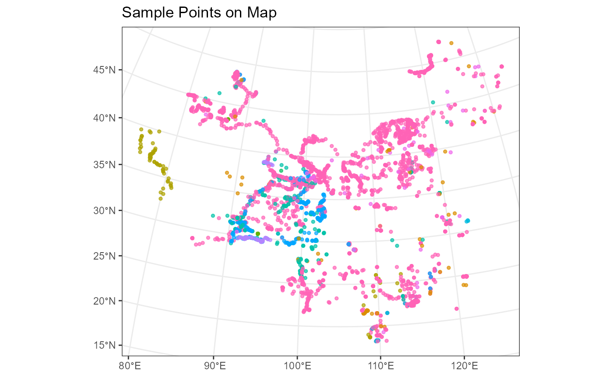

Introduction
This vignette introduces two functions in the ggmapcn package:
geom_loc and geom_vege_raster. These functions
extend the capabilities of the package for spatial data
visualization.
geom_loc: Adding Spatial Point Data Layer with Color by Grouping
The geom_loc function allows you to add spatial point
data to a ggplot, supporting both sf and tabular data frames, with color
mapping based on a grouping variable.
# Load the example data provided by the package
data(pollen)
# Create a ggplot with spatial points colored by 'Sample type'
ggplot() +
geom_loc(
data = pollen, lon = "Longitude", lat = "Latitude",
mapping = aes(color = `Sample type`), size = 1, alpha = 0.7
) +
labs(title = "Sample Points on Map")+
guides(color = guide_none()) +
theme_bw()
#> Linking to GEOS 3.11.2, GDAL 3.8.2, PROJ 9.3.1; sf_use_s2() is TRUE
geom_vege_raster: Vegetation Map of China Layer for ggplot2
The geom_vege_raster function adds a vegetation raster
map of China with color-coded vegetation types to a ggplot.
# Add vegetation raster of China to a ggplot
ggplot() +
geom_vege_raster() +
guides(fill = guide_none()) +
theme_bw()
#> terra 1.7.78
#>
#> Attaching package: 'tidyterra'
#> The following object is masked from 'package:stats':
#>
#> filter
#> <SpatRaster> resampled to 1000820 cells.
#> Warning: Removed 715938 rows containing missing values or values outside the scale range
#> (`geom_raster()`).